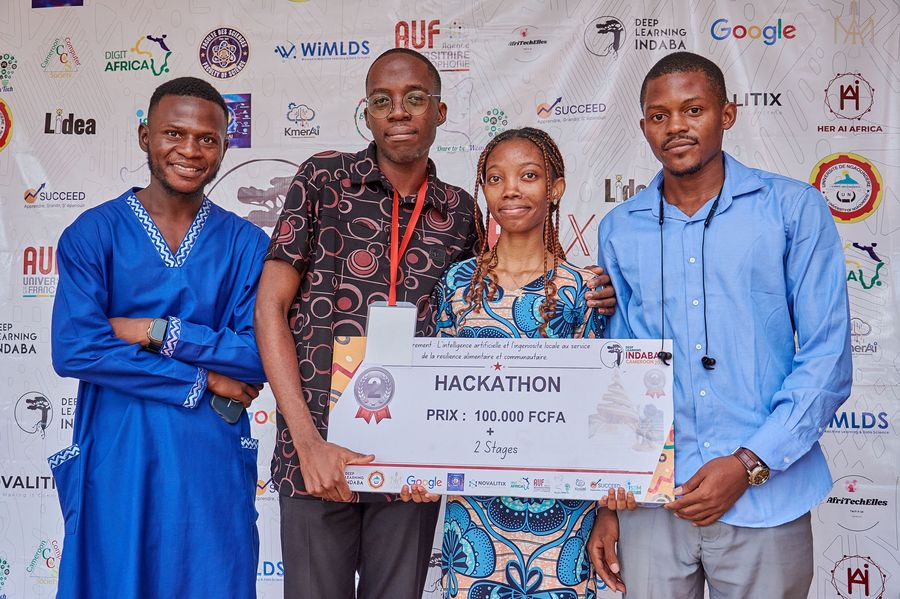
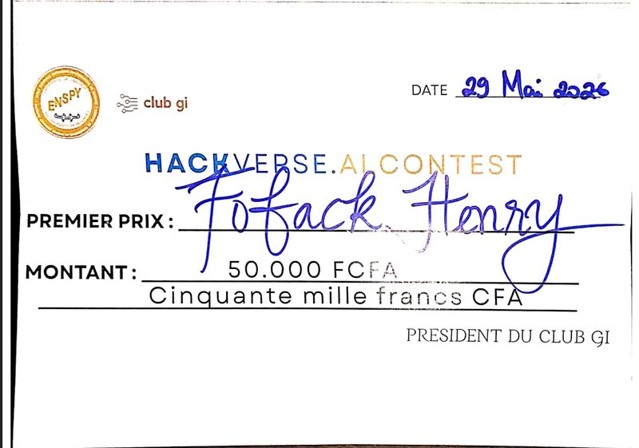
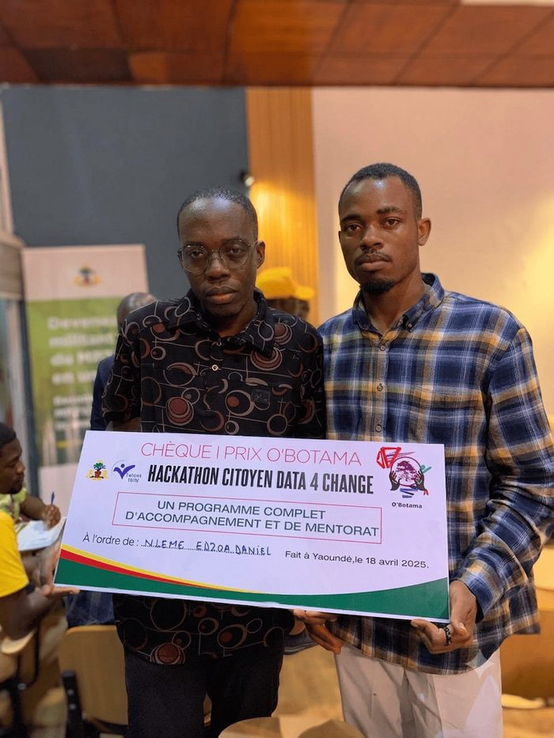
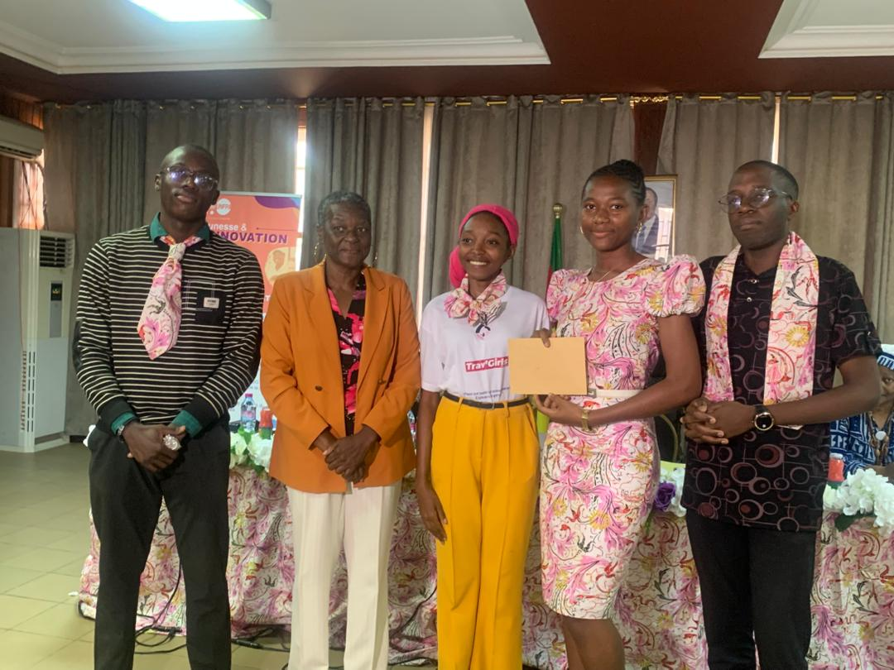
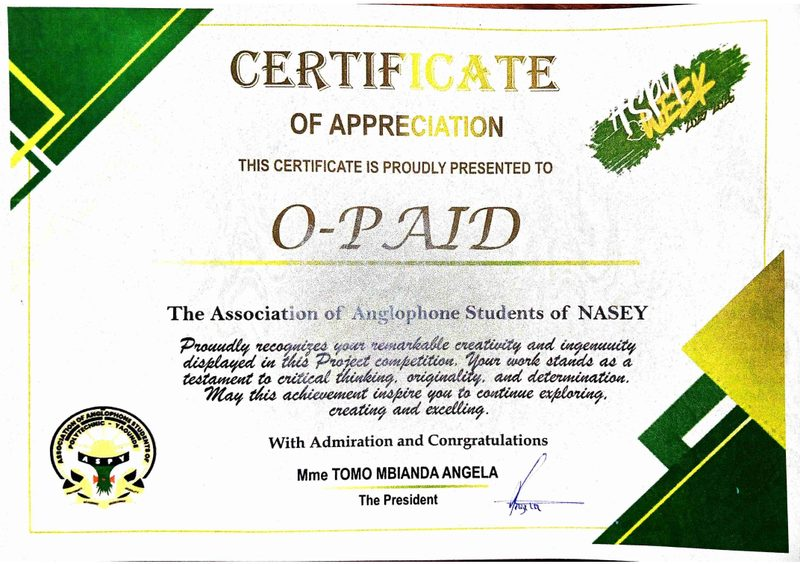
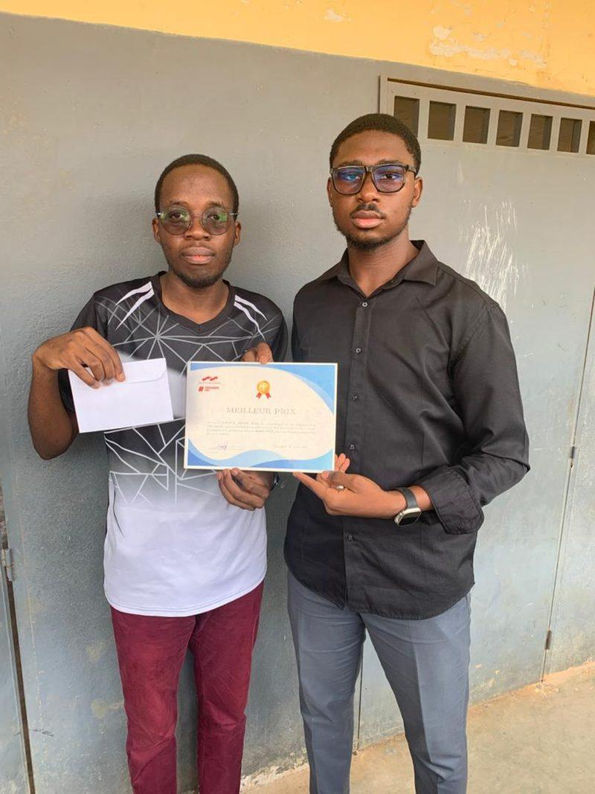

Étudiant ingénieur en Génie Informatique à l'ENSPY, passionné par la Data Science, le Machine Learning et le Deep Learning. Solides bases théoriques en apprentissage automatique et en réseaux de neurones, que je m'efforce chaque jour de traduire en compétences pratiques concrètes. Maîtrise des outils fondamentaux (Python, Pandas, Scikit-learn) et expérience acquise sur plusieurs projets fullstack en équipe. Je cherche à contribuer à des projets à fort impact technique et humain.

Avec mon équipe de l'ISSEA (Mark Fankam, Sabine Bodehou et Firmin Peurbar Rimbar), j'ai décroché la 2e place du hackathon IndabaX Cameroun 2026 grâce à AirSentinel, un outil d'intelligence artificielle dédié à l'anticipation des épisodes de pollution atmosphérique.

Premier vainqueur de l'édition inaugurale du concours d'intelligence artificielle organisé par le Club Génie Informatique de l'École Nationale Supérieure Polytechnique de Yaoundé (ENSPY).

Décroché la 3e place du hackathon organisé par le parti politique MPS, portant sur la conception d'un système intelligent de prédiction des prix du transport inter-urbain entre les villes de Yaoundé et Douala.

Distingué lors de la Semaine de la Fille Scientifique 2025 pour OPAID, un compteur d'eau prépayé intelligent, au concours de projets de l'Association des Filles de l'ENSPY (AFENSPY).

Le projet OPAID a également remporté le premier prix du concours de projets organisé par l'ASPY, confirmant la pertinence et le potentiel d'impact social de cette innovation.

Désigné Premier Statisticien de l'Année 2025 (niveau Licence) lors du concours organisé par le groupe Statosphère de l'ISSEA.